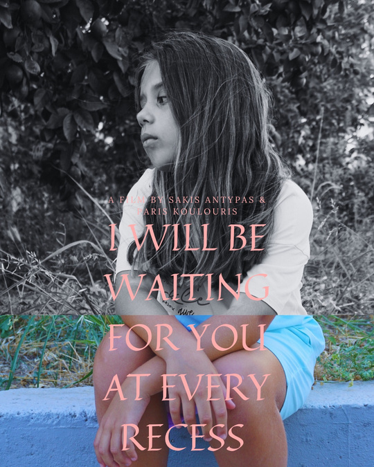
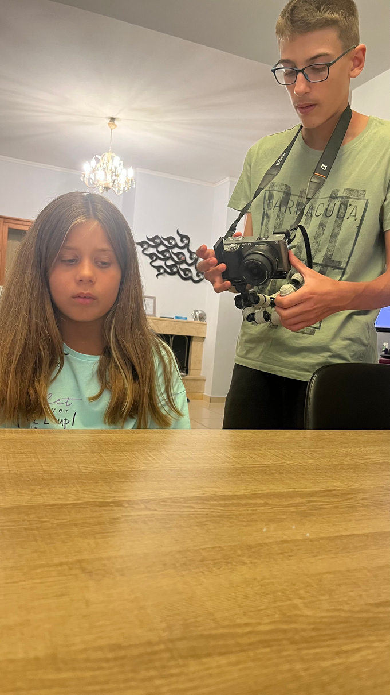
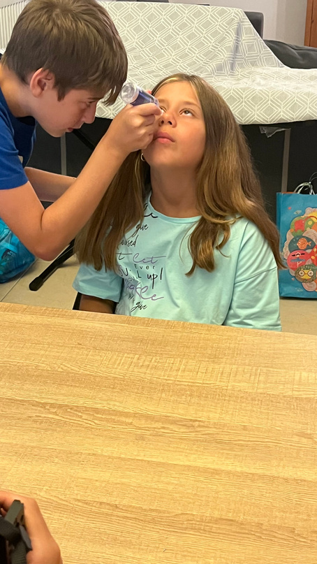
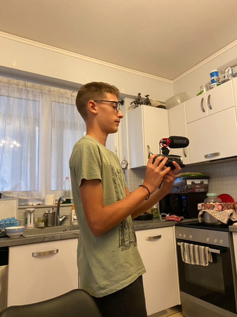

A short film by Sakis Antypas
01
Award
04
Selections
09
Lift-Off Sessions
07′
Runtime
01 — Synopsis
A small group of students, no professional equipment, no budget — only the need to stand beside a friend fighting cancer. What began as a personal gesture became a film about solidarity, hope, and the quiet strength of being present when words are not enough.
02 — Trailer
03 — Feature
Selected, awarded, and welcomed by festivals across three continents. A no-budget student film carried by the conviction that cinema can begin with empathy alone.
Approved by the official IMDB film catalogue! SEE THE FILM'S PAGE HERE
05 — Director

This film was born from the need to talk about something we usually avoid: childhood cancer and the silent strength of young people who are forced to grow up too fast.
As a student filmmaker, I did not want to approach this story with pity or sentimentality. My goal was to create a film that respects its subject and focuses on human dignity, resilience, and hope.
Visually, I chose a restrained and intimate cinematic language. Simple compositions, controlled pacing, and minimalistic sound design were used to allow the emotions to emerge naturally, without manipulation. Every creative decision was guided by honesty.
This project represents a starting point. It reflects my desire to continue creating films that combine storytelling with social awareness — to use cinema as a tool for connection, empathy, and change.
— Sakis Antypas
06 — Production
Produced independently by a small student team alongside school obligations. Every stage — development, filming, editing, post — was completed collaboratively, with the crew assuming multiple roles and adapting creatively to constraints in time, budget, and equipment.
Cast & Crew
07 — Stills & Set


Why this film matters
Age is not a limitation. Budget is not a prerequisite for meaning. Cinema can begin with a single human intention.
08 — Contact